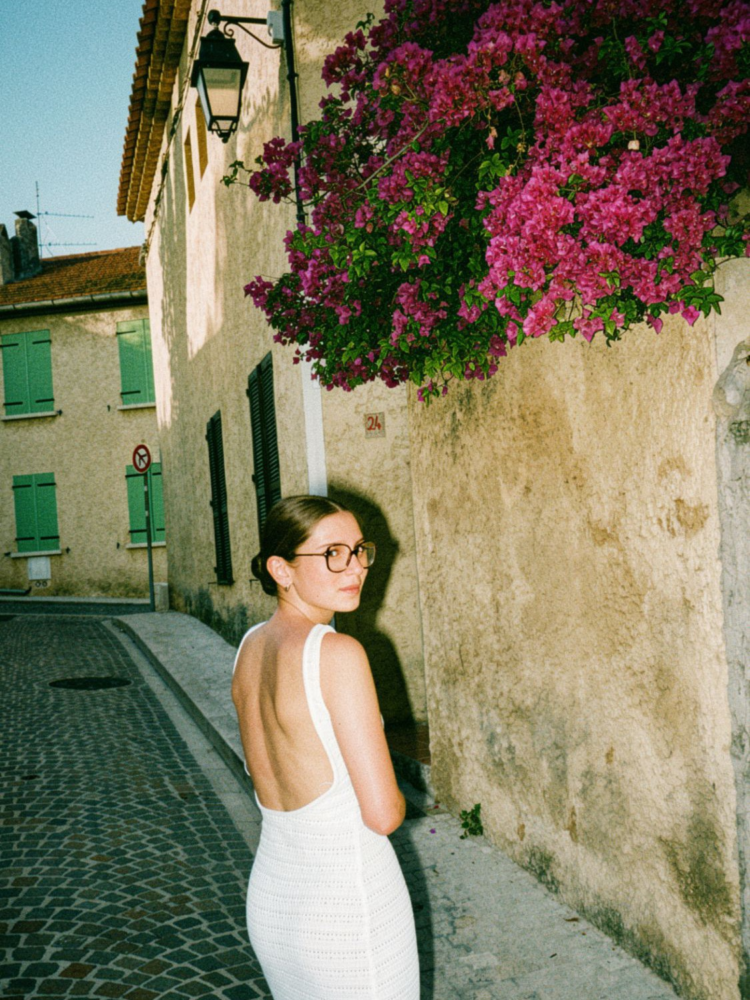
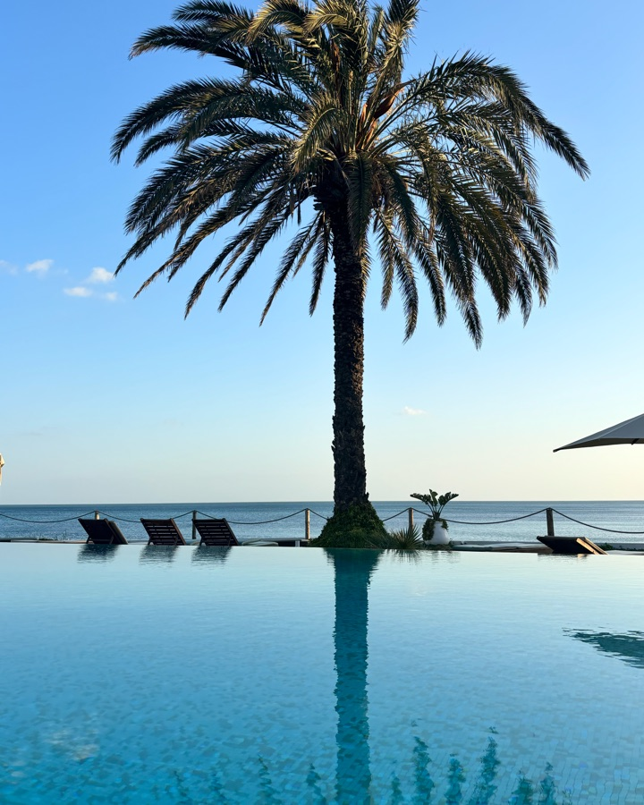
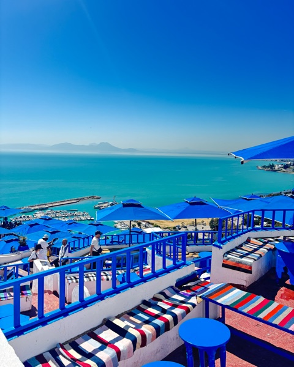
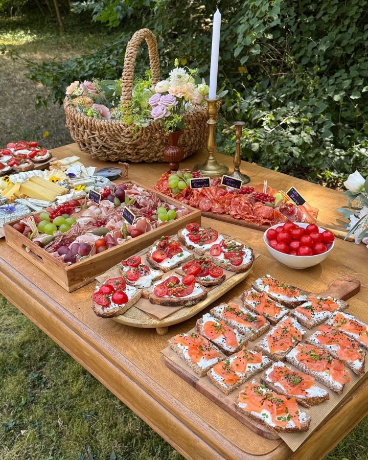
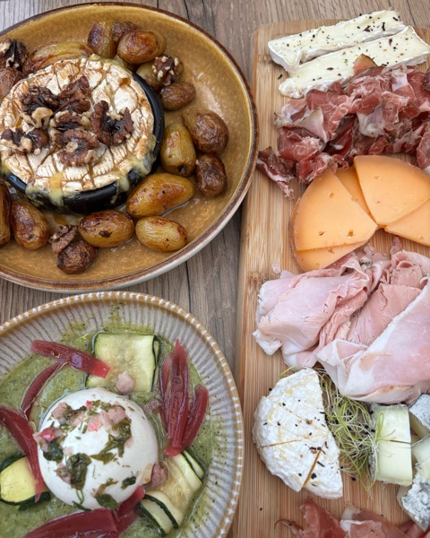
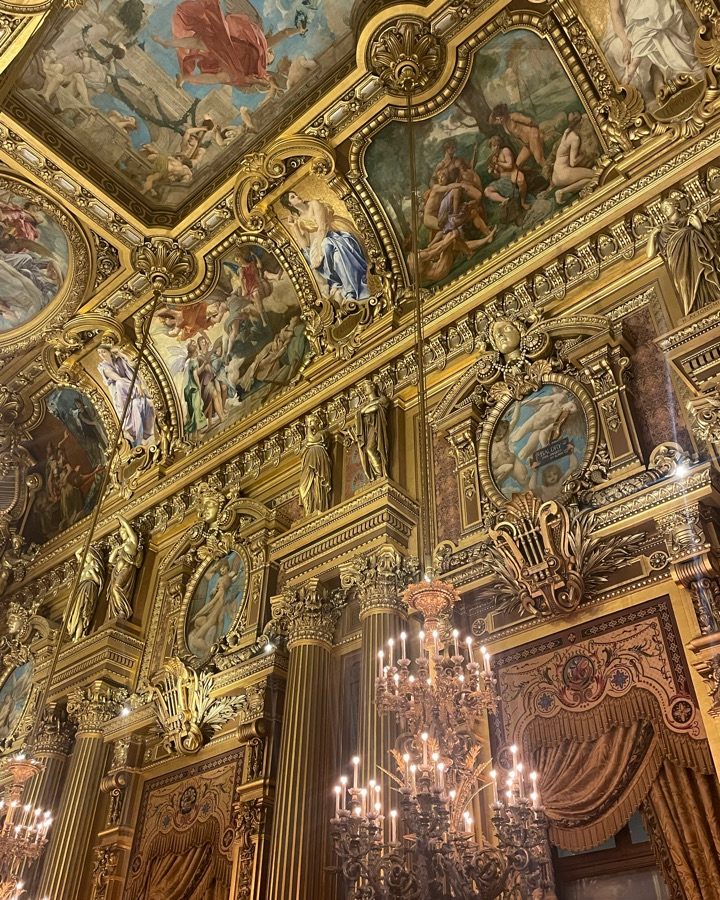
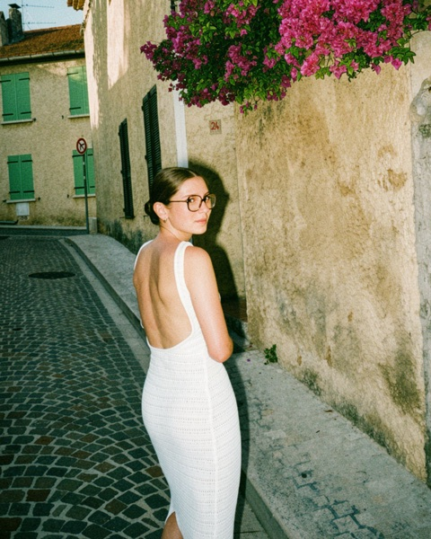
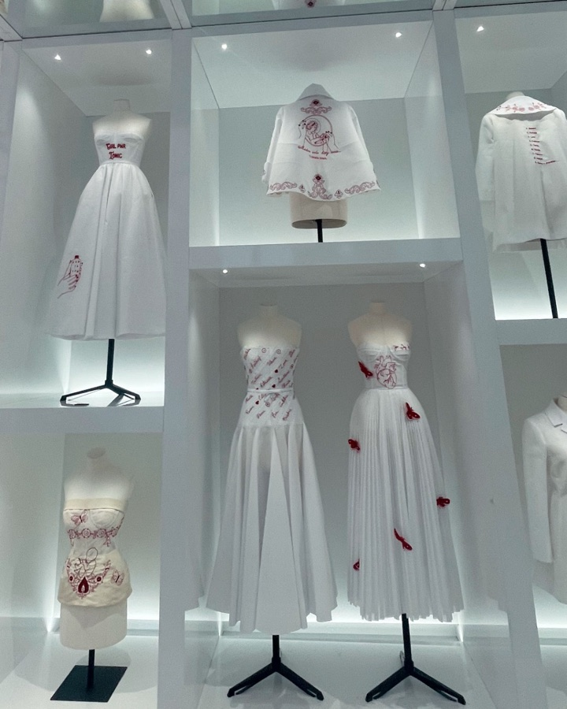
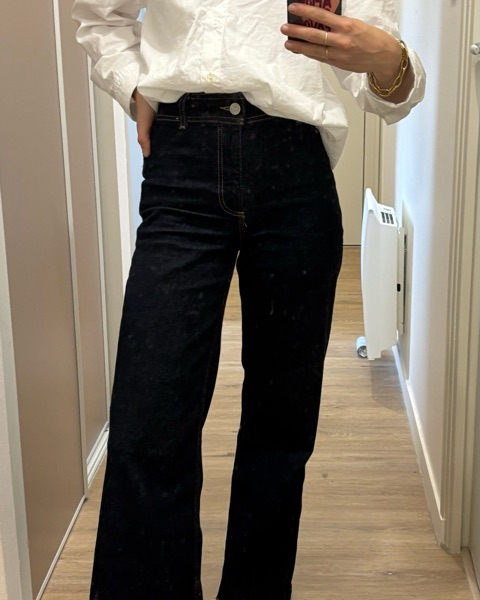

Sept. 2025 — Sept. 2026
E.Leclerc Falaise
Alternance — Bachelor
- Communication interne et externe
- Gestion des réseaux sociaux
- Création de PLV
- Organisation d’événements

Qui suis-je ?
Diplômée d’un Bachelor Communication, Marketing & Événementiel
Portrait
Dynamique et curieuse, je suis passionnée par la communication et la création de projets événementiels concrets.
Mon parcours en école et mes expériences en entreprise m’ont permis de développer des compétences solides, que je souhaite aujourd’hui mettre au service de nouveaux défis professionnels.








Sept. 2025 — Sept. 2026
Alternance — Bachelor
Alternance BTS
Alternance — photographe
Nov. 2023 — Juil. 2024
Alternance
Avril 2023 — Août 2023
CDI